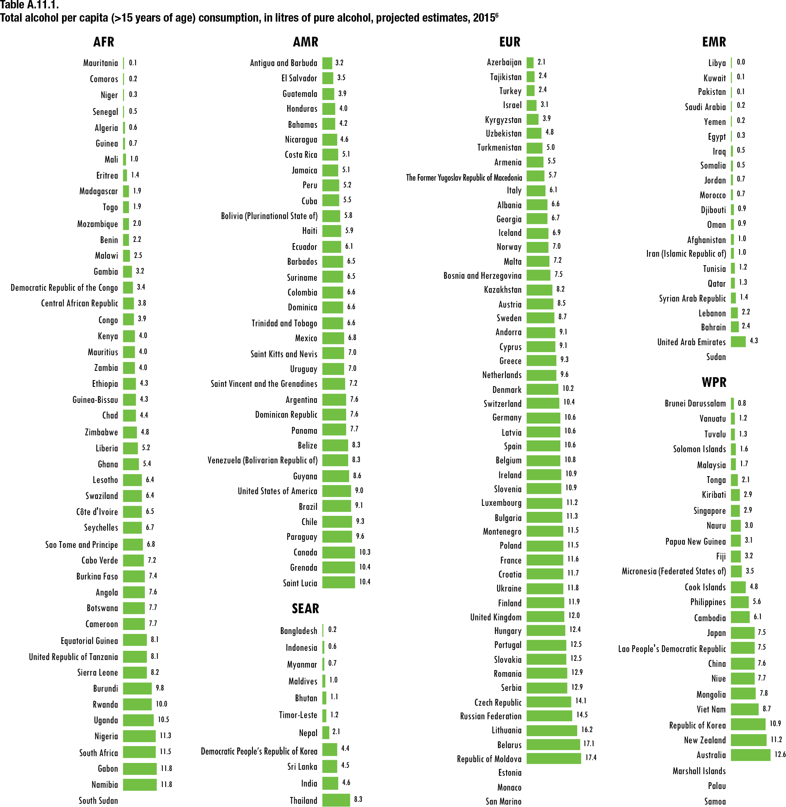
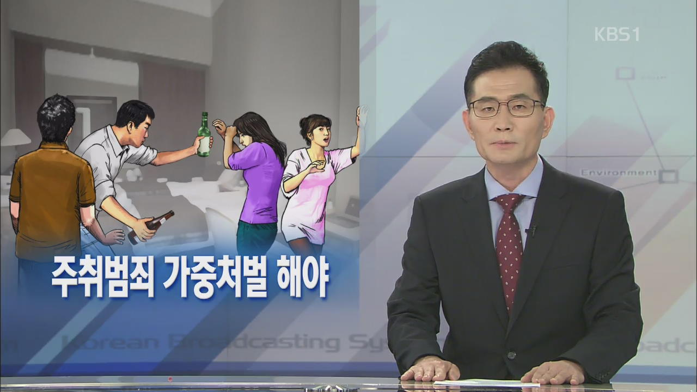
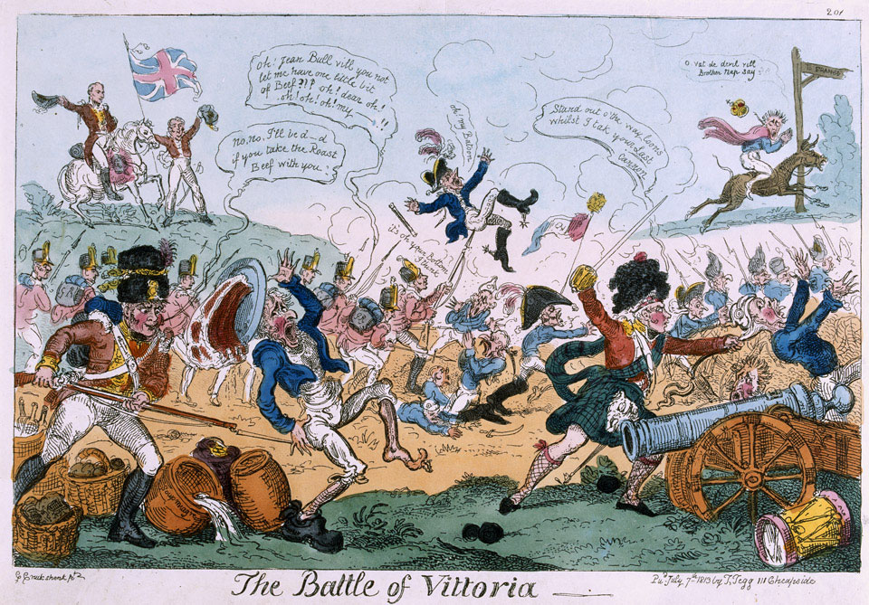
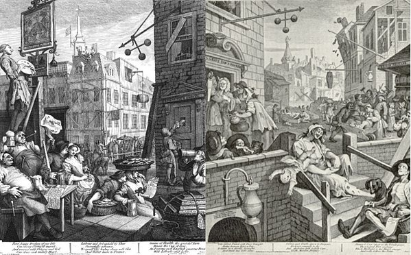
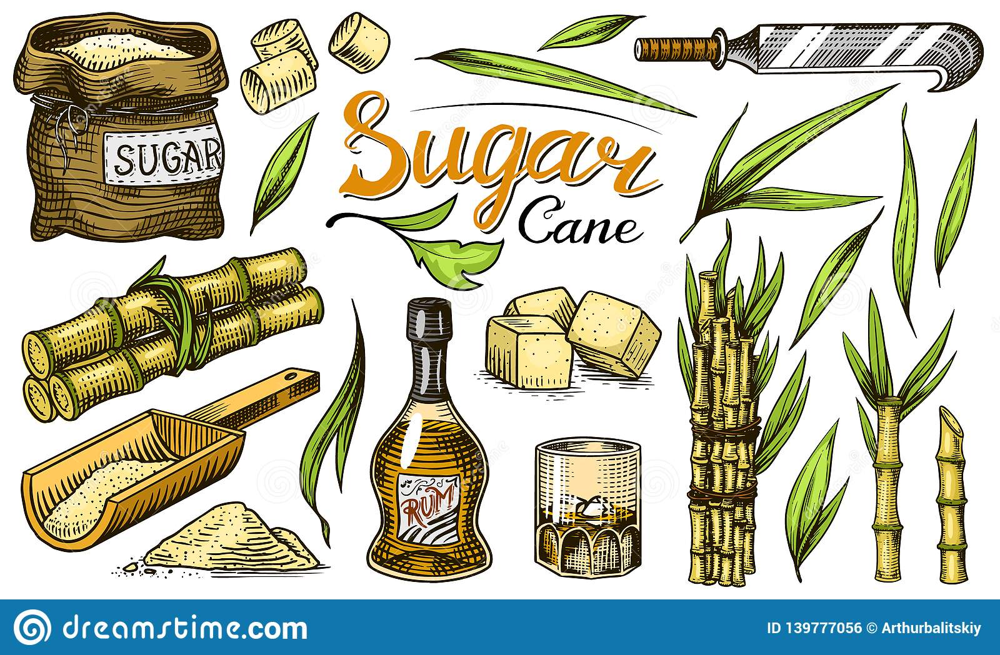
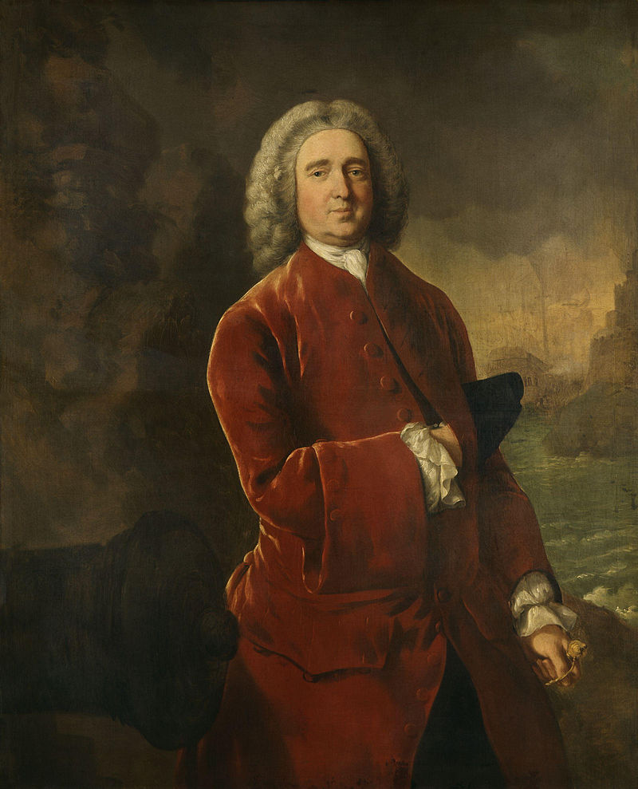
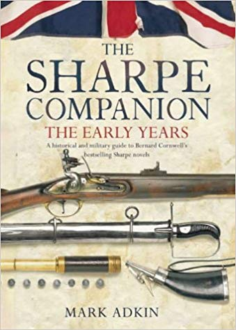

합법 마약 - 나폴레옹 시대의 영국의 음주 행태
게시: 2019-08-29T06:30:07+09:00
전에 신문에서 읽었는데, 중국의 CCTV에는 중국 각지의 소수 민족을 찾아다니며 각 민족 고유의 풍습과 생활을 소개하는 프로그램이 있다고 합니다. 그런데, 그 프로그램에서 꼭 나오는 장면이, 그 소수 민족이 모여서 술을 마시고 취해서 노래를 부르고 춤을 추는 장면이 꼭 나온다고 하네요. 그 글을 쓴 필자는, 그것이 소수 민족이 흥겹게 살아가는 모습을 보여주는 것도 있지만, 대다수를 차지하는 한족들에게, '소수 민족들은 대개 음주가무에 빠져 지내는 열등 민족'이라는 이미지를 심어주기 위한 의도도 있는 것 같다고 씁쓸해했습니다. 중국인들이 술에 취하는 것을 좋아하느냐 안하느냐는 일단 생각하지 말고, 우리나라 사람들에 대해서만 생각해보면, 우리나라 사람들만큼 정말 음주가무를 즐기는 민족도 드뭅니다. 사실 제가 볼 때는 조금 상황이 심각할 정도로 많이 즐깁니다. 우리 스스로가 못느낄 뿐이지, 우리나라는 음주 문제가 사실 심각한 나라입니다. 제가 카투사 시절에 (당연히 미군들하고 사이가 안좋았지요 !) 미군애들과 이야기를 하다가 들었는데, 우리나라의 1인당 소주 소비량이 1주일에 1병이던가 2병이던가라면서, 한국인들은 모두 알콜중독자라고 씨부렁거리던 것이 기억납니다. 사실 갓난아기까지 포함한 평균 수치가 정말 그렇다면 큰일이다 싶었는데, 찾아보니까 정말 한 1.8병 정도였습니다. 그것에 추가로 맥주도 한 2.3병 정도 소비하더군요. 대체 이 술을 다 누가 마시는 겁니까 ?

(우리나라는 오른쪽 하단 부분에 있습니다. 순수 알콜의 섭취량인데, 우리나라는 딱 아일랜드와 동일하군요. 아시아 국가 중에서는 단연 탑입니다.)
세계적으로는 어떤가 하고 찾아보니까, 우리나라의 1인당 술 소비량은 아시아권에서는 단연 탑이고 세계적으로도 많은 편에 속합니다만, 의외로 그렇게까지 높지는 않고 그냥 유럽 중간 정도 갑니다. 다만 유럽인들보다 우리가 체구가 좀 작은 편이라는 점을 생각해보면 꽤 취하도록 마시는 편이라는 점은 이해가 갑니다. 특히 유럽인들은 식사 때마다 맥주나 와인 1~2잔을 항상 곁들이기 때문에 절대적인 알콜 섭취량이 많은 것이지 취할 때까지 마시는 경우는 많지 않다는 점을 고려하면 우리나라 음주 문화가 다소 폭음 쪽으로 잘못 형성되었다는 생각은 듭니다. 따지고 보면, 낮에는 멀쩡하게 직장에서 일 잘하고 집에서는 평범한 가장인 사람이, 밤에 만취해서 길바닥에 쓰러져 자는 것이 별로 크게 이상하지 않게 여겨지는 나라가... 적어도 OECD 국가 중에는 그리 많지 않을 것 같습니다.

(폭력 행위를 저질렀을 때 경찰이 오기 전에 소주를 벌컥벌컥 마셔두는 것이 변호사를 부르는 것보다 더 효과적인 법적 대응이라는 소리를 어디서 읽은 적이 있습니다. 세상에 음주에 대해 이렇게 관대한 나라가 또 있을까 싶습니다. 법 만드는 국회의원들과 사법부 검찰 등에 계신 분들이 술을 좋아하셔서 그런 것일까요 ? 저로서는 납득이 가질 않습니다.)
흔히들 말하기를, 서양인들은 술의 맛과 향을 즐기려고 마시고, 우리나라 사람들은 취하기 위해서 마신다고 하지요. 제 생각에는, 경제 수준과도 상관있는 것 같습니다. 프랑스 사회에 대한 책에서 읽었는데, 우리나라 유치원에서는 전통적으로 노래 연습을 많이 시키는 것에 비해, 프랑스에서는 미술 교육을 많이 시킨다고 합니다. 그 이유를 분석해놓은 것이 약간 뜨아하면서도 그럴싸 하다고 생각되었습니다만, 노래 교육은 상대적으로 비용이 많이 들지 않는 것에 비해, 미술은 소모성 재료가 많이 들어가므로 비용이 많이 들기 때문에, 국민 소득이 낮은 국가일 수록 미술 교육보다는 노래 연습을 많이 시킨다고 하네요. 동의하십니까 ? 아무튼, 비슷한 이유로, 우리나라 사람들은 척박한 사회 환경에서 가장 저비용의 쾌락을 추구할 수 있는 것이 바로 술, 그것도 소주이기 때문에 그렇게 술을 많이 마신다고 생각됩니다. 사실 뭐 스포츠를 하려고 해도 돈이 많이 들고, 미국 애들처럼 집에서 뭔가 뚝딱뚝딱 만들어보려고 해도 차고와 각종 연장, 넓은 공간이 필요하쟎아요. 그러다보니 할 게 술마시는 것 외에는 별로 없는 것이지요. 그런데, 이런 사정은, 지금은 그렇게까지 마셔대는 것 같지는 않습니다만, 18~19세기 영국도 마찬가지였습니다. 당시 영국은 온 나라가 술에 쩔어 살았습니다. 물론 사회 최고위층 인사들이야 주정뱅이가 아니었겠지요. 그러나 소위 상류계층인 군 장교들만 하더라도, 주정뱅이가 많았습니다. 나폴레옹 전쟁 당시, 영국군 사병은 하루에 1파인트 (0.56리터)의 포도주나 1/3 파인트의 럼주를 배급받게 되어있다고 했었습니다. 우습게도, 많은 수의 사람들이, 단순히 '매일 술을 마실 수 있다'는 이유 하나만으로 군에 입대했다고 합니다. 그래서 스페인 비토리아(Vittoria) 전투에서 대승을 거둔 웰링턴 공작은 부하 병사들의 약탈 행위에 화가 났을 때, 공개적으로 자기 병사들을 '술이나 퍼마시러 입대한 땅거지 색히들'이라고 욕을 해댔다고 하지요.

(1813년의 비토리아 전투입니다. 이 전투로 스페인에서 프랑스군은 완전히 철수하게 됩니다. 스페인에서 약탈한 온갖 귀중품을 바리바리 싸들고 철수하던 프랑스군을 영국군이 따라잡아 공격한 이 전투는 특히 나폴레옹 전쟁 중의 전투 중에서 가장 많은 액수의 노획물이 발생한 것으로 유명한데, 웰링턴이 화가 났던 이유는 그런 값진 노획물 중 상당수가 병사들의 배낭 속으로 사라졌기 때문입니다.) 당시 영국 해군 이야기를 그린 Hornblower 시리즈에서도, "Flying Colors" 편을 보면, Hornblower 함장은 긴 항해 끝에 식수가 다 떨어져 가지만, 혼블로워 함장은 물보다도 럼주가 다 떨어져 가는 것을 더 걱정합니다. 수병들은 럼주만 계속 배급이 되면, 식수가 다 떨어져도 반란을 일으키지 않는다는 것이지요. 단, 맥주는 술로 취급하지 않았습니다. 챨스 디킨즈의 "Great Expectations"라는 작품을 보더라도, 12살 정도의 어린 주인공에게 식사꺼리가 제공되는데, 물 대신 독한 ale이 주어지는 것을 볼 수 있습니다. 당시 워낙 식수 사정이 안좋아서, 영국인들은 대개 물은 잘 마시지 않았습니다. 당시 런던의 주 식수원은 템즈 강이었는데, 여기서 물을 길어오면, 인간의 분뇨는 약과이고, 온갖 독성 물질과 가축의 분뇨 등이 다 나왔다고 합니다. 중산층은 샘에서 길어온 물을 사 마셨지만, 대부분의 서민들은 이 강물을 식수로 썼습니다. 서머셋 모옴의 "인간의 굴레"를 보더라도, 템즈강에 투신 자살을 시도한 남자가, 빠져죽지는 않았지만 그때 마시게 된 템즈강 물로인해 장티푸스에 걸려 죽는 이야기가 나올 정도였습니다. 이때는 이미 1900년이었는데요 ! 그래서 대신 맥주를 마셨고, 차가 널리 보급된 이후로는, 차를 마셨습니다. 영국인과 아일랜드인의 생활상을 보여주는 단어가 "영국인이 차와 흰빵을 먹는 동안, 아일랜드인은 물과 감자를 먹었다" 라는 것으로 표현이 됩니다. 이야기가 겉돌았는데, 본론으로 돌아와서, 영국군에게 주어지는 술은 거의 100% 럼주였습니다. 당시 영국은 (지금도 그렇지만) 포도주로 유명한 나라가 아니었습니다. (날씨가... OTL) 그러므로 제일 값싼 술은 gin 이었습니다. 그러나, 호밀로 만드는 증류주인 진 이라는 술은, 그야말로 최하층 빈민들이 마시는 술이라는 인상이 워낙 강했습니다. 오죽했으면, 챨스 디킨즈도 "진을 마시는 것은 영국의 큰 해악이다."라고 썼겠습니까 ? 1730~1740년대에 발전한 진 문화는, 거의 현대 미국 도시에서 큰 문제를 일으키는 마약 문제와도 맞먹었을 정도였습다. 진이 하류층에서 크게 유행하고, 또 사회악으로 번진 이유는, 너무 가격이 쌌기 때문이었습니다. "1페니면 취할 수 있고, 2페니면 죽을 정도"라는 말이 있을 정도였으니까요. 당시 통계치가 정확한지 모르겠습니다만, 1740년대에 런던 인구가 마시는 진의 평균치가 1주일에 2파인트(1.12 리터)였습니다. 남자, 여자, 갓난아기 다 합해서요. 이 정도면 요즘 우리나라의 소주 소비량은 저리 가라지요 ? 당시 런던 시내 8가구마다 1곳씩 진을 파는 술집이 있었고, 시내 곳곳마다 진에 취해 쓰러진 사람들이 즐비했답니다. 정부에서도 사태가 너무 심각하다고 생각하여 진 금지법을 1743년에 제정하려고 했는데, 폭동이 일어나서 결국 실패했다고 합니다. 극작가인 헨리 필딩은 진에 대해 다음과 같은 글을 남겼습니다. "진이야말로, 대도시 인구 수십만명을 해치는 해악이다. 이 독한 술에 접한 사람들은, 지독한 주정뱅이가 되어, 이 술을 다시 사기 위한 돈조차 제대로 벌 수 없게 된다. 게다가 모든 수치심과 공포심도 없애버려서, 상상할 수 있는 모든 범죄와 뻔뻔스러움을 낳게 한다."

(윌리엄 호가쓰(William Horgath)의 유명한 1751년 그림입니다. 'Beer Street & Gin Lane'이라는 제목으로, 당시 음주에 찌든 영국 하층민들의 삶을 보여주고 있습니다.)
그러므로, 경제적으로는 군대에도 진을 공급하는 것이 적당했겠지만, 정부는 이 지긋지긋한 술을 도저히 군대에 공급할 수가 없었나 봅니다. 다행히, 당시 영국은 카리브해에서 사탕수수 플랜테이션을 활발하게 경영하고 있었으므로, 사탕수수 찌꺼기로 만드는 증류주인 럼주의 생산과 유통이 활발했습니다. 그래서, 육군이나 해군이나, 대부분 럼주를 공식 주류로 공급했습니다.

럼주는 도수가 최고 75도까지 갑니다. (저는 한때 이게 알코올 농도를 말하는 것인줄 알았습니다만 그런 건 아니더군요.) 엄청난 독주지요. 당시 공급되었던 럼주가 이렇게까지 정제된 것은 아니었겠습니다만, 아뭏든 너무 독주였으므로, 당시 해군 제독이던 에드워드 버논(Edward Vernon, 별명 Old Grog)은 수병들에게 배급하는 럼주에 물을 절반 섞어서 주도록 했습니다. 이래서 탄생한 것이 바로 그록(grog)입니다. 권투에서 말하는 그로기(groggy) 상태라는 단어도, 바로 이 그록을 잔뜩 마신 상태에서 나온 것입니다. 이는 영국 해군 내에서 럼주와 동일한 뜻으로 사용되었습니다. 영국 해군에도, 육군과 마찬가지로 채찍질 체벌이 있었습니다만, 이와 비슷한 레벨의 체벌은 바로 'grog 배급 중단'이었습니다. 육군은 육군이라는 특성상, 어떻게든 술을 손에 넣을 방법이 꽤 많았습니다만, 해군에서는 배라는 특성상, 배급되는 것 외에는 술을 구할 방법이 진짜 없었거든요.

(그록의 창시자이신 Edward Vernon 제독이십니다. 그는 평상시 그로그램(grogram)이라는 천으로 만들어진 코트를 자주 입어 '늙은 그록(Old Grog)'이라는 별명으로 수병들 사이에서 불렸는데, 그로 인해 럼반-물반의 희석 럼주 이름도 그록으로 굳어버렸습니다.) 럼주는 Hornblower의 입을 빌리면, 그야말로 영국 육해군의 "Life Blood"였습니다. 어떤 인도 세포이 병사의 회고에 따르면, 영국군은 틀림없이 럼주 속에 뭔가 마법약을 집어넣는 것이 틀림없다고 했습니다. 럼주만 마시면 영국군은 매우 사나와져서 두려움을 모르고 싸웠고, 또 심한 부상을 입고 다 죽어가는 병사도 럼주를 조금 마시면 금방 되살아난다고 했습니다. 다만, 그 '마법약'을 너무 많이 집어넣으면 병사들이 너무 흥분해서 제풀에 죽어버린다고도 '아주 잘' 관찰했더군요. 1780년에 런던에서, 로마 교황에 반대하는 군중이 가톨릭 수도원을 습격한 사건이 있었습니다. 이른바 고든 폭동이라는 이 사건의 하일라이트는 바로 가톨릭 수도원 부속 진 증류장 습격이었습니다. 사실 대부분의 군중들은 수도원보다는 이 진 증류장을 노리고 이 폭동을 일으켰습니다. 폭도들은 재빨리 이 증류장의 문을 부수고, 그 중에서 더욱 생각없는 일부 인간이 불을 질렀는데, 이 불길 속을 목숨을 무릅쓰고 뛰어들어갔다고 합니다. 손에는 양동이와 주전자, 심지어 말구유를 들고서요. 곧 뜨거워진 증류기가 터지면서, 진 원액이 길바닥에 쏟아져 나와 하수 도랑으로 흘러들었는데, 군중들은 술에 만취하여 쓰러질 때까지, 이를 땅에 엎드려서 입을 대고 마셨습니다. 나중에 민병대가 출동해서 상황을 정리했는데, 이때 만취해서 쓰러진 사람들 중 4명의 여자를 포함해서 총 20명의 사람들이 과음으로 즉사했다고 하네요. 이 정도면 막장 인정입니까 ?

(제 글에서 인용된 영국의 당시 음주 행태 사례는 Mark Adkin이라는 현역 영국군 소령이 지은 'Sharpe Companion'이라는 책에서 인용한 것입니다. Sharpe 시리즈의 역사적 배경을 설명한 해설서입니다.)
# 목요일에 올리는 과거 재탕글이었습니다...